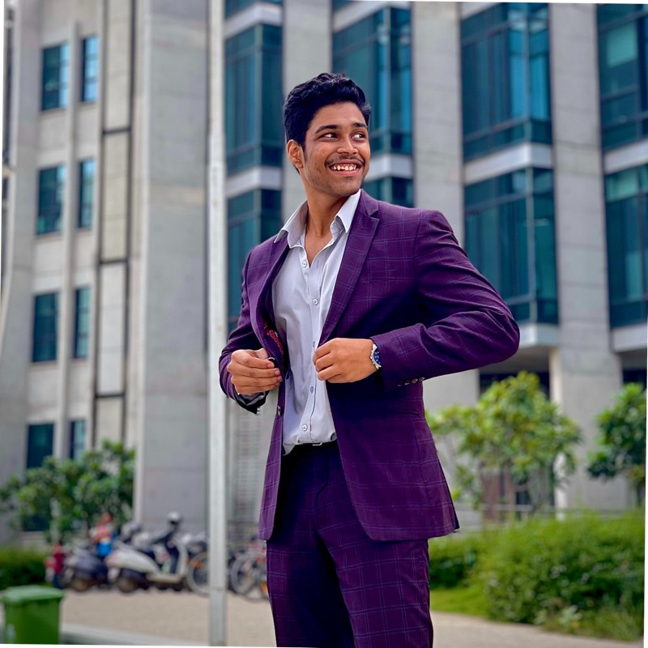

Aspiring Management Consultant | Entrepreneur | Community Leader | Tech Enthusiast
Building AdVantage & Solaris | MIT Trained Entrepreneur & Innovator | Host @Explore the Cosmos with Solaris | SIB Alumni @ Suzuki Innovation Centre | Microsoft for Start-ups Founder | Founder @MSC Hyderabad
Welcome to my portfolio! I’m a tech-driven innovator, entrepreneur, and community builder passionate about leveraging technology to solve real-world problems. With experience spanning edtech, blockchain, and AI, I’ve co-founded impactful startups, led thriving tech communities, and worked on projects that bridge the gap between innovation and accessibility. Here, you’ll find details about my entrepreneurial journey, technical projects, and initiatives aimed at empowering communities through education and technology. Feel free to explore my work and don’t hesitate to connect—I’d love to collaborate and share ideas!
Technical Skills: Python, SQL,java, HTML, CSS, JavaScript, AI, Blockchain, Data Science, Machine Learning, NLP, MATLAB, Excel (Advanced).
Leadership & Strategy: Product Development, Market Research, Community Building, Mentorship, Strategic Execution, Team Management.
Let’s Connect!